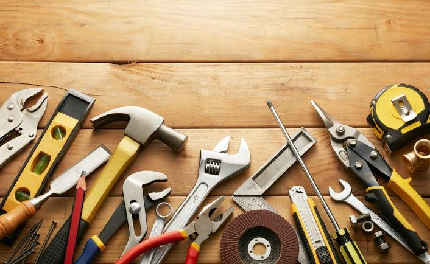

5 elementos de seguridad para trabajar en casa

Antes de comenzar cualquier reparación, construcción o trabajo con herramientas es importante contar con elementos de protección personal adecuados.
Uno de los elementos más importantes son los guantes de seguridad. Estos ayudan a proteger las manos frente a cortes, golpes y materiales ásperos.
Los lentes de seguridad también son fundamentales, especialmente al utilizar taladros, sierras o herramientas que puedan generar pequeñas partículas.
Otro elemento importante es el calzado de seguridad. Dependiendo del trabajo, puede ser recomendable utilizar zapatos resistentes que protejan los pies frente a golpes.
Cuando se realizan trabajos que generan mucho ruido, también es recomendable utilizar protección auditiva.
Finalmente, siempre es importante revisar el estado de las herramientas antes de utilizarlas y mantener el área de trabajo ordenada.